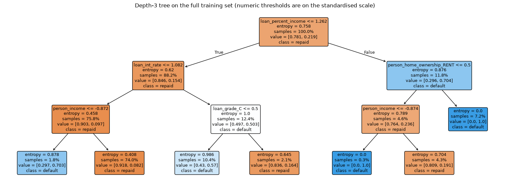
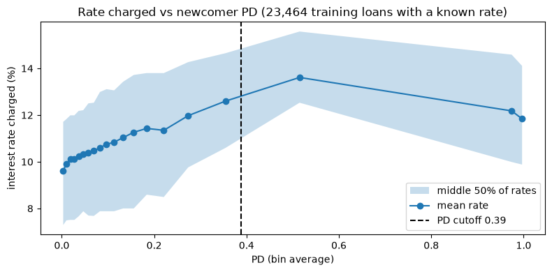
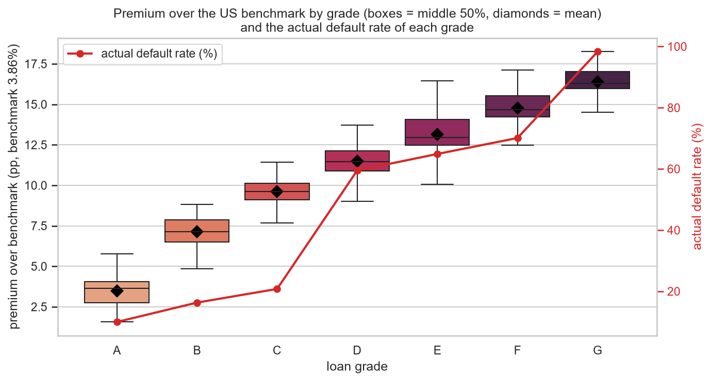

Result analysis: why the results look like this
Each finding in plain words, with the evidence from our own notebooks.
1. Knowing the grade is almost as good as knowing everything
What we saw
Pipeline A (grade, no rate) predicts default as well as the Reference (grade and rate): test F1 0.837 vs 0.838, Brier 0.053 vs 0.052. Without the grade (Pipeline B), F1 falls to 0.699.
Why
The grade is the lender's own verdict on the applicant, built from information we do not have (for example their credit-bureau record). The interest rate is then set from the grade, so once the grade is known the rate adds nothing new.
Proof
Grade alone predicts the interest rate with R² 0.903 (nb 09). In the Random Forest's permutation importance, grade is the 4th most important input and the rate only the 6th.

2. Trees and forests beat straight-line models
What we saw
Random Forest F1 0.830 and decision tree 0.813, against 0.68 for logistic regression and the linear SVM (validation, Reference setting).
Why
Default risk follows yes/no rules that combine features, for example "renting and borrowing more than about 31% of income". A straight-line model adds up each feature's effect separately and cannot express "only when both are true"; a tree can.
Proof
In a depth-3 tree, applicants who rent and borrow more than ~31% of their income (7.2% of all applicants) all defaulted. Even the best linear model misclassifies about 13% of training applicants at any margin width (notebook 02, Step 5).

3. A forest of trees beats a single tree
What we saw
One fully grown tree: F1 0.746. Three hundred trees averaged (bagging): 0.824.
Why
A single deep tree memorises its training data (training F1 = 1.0), so it makes many confident mistakes on new applicants. Trees trained on different random samples make different mistakes; averaging them cancels much of the error. Choosing among a random subset of features at each split makes the trees even more different.
Proof
Average correlation between the trees' predictions: 0.64 with all features (bagging), 0.57 with random feature subsets. Validation F1 rises with the number of trees and levels off after about 100 (it never gets worse).

4. SMOTE did not help
What we saw
Adding synthetic defaulters raised recall (0.56 → 0.77) but lowered precision (0.77 → 0.55): F1 stayed at 0.645. With the cutoff tuned, F1 was 0.676 with SMOTE and 0.674 without.
Why
Training on a 50/50 world makes the model's scores higher for everyone, which moves the decision line, exactly what lowering the cutoff does. It does not teach the model anything new about who defaults.
Proof
Logistic regression's scores with and without SMOTE are 99.6% correlated; the best cutoff moves from 0.33 (no SMOTE) to 0.67 (SMOTE). The same pattern held for the linear and RBF SVMs: SMOTE moved precision and recall but never raised F1 once the cutoff was tuned.
5. The models miss defaulters who look safe
What we saw
On the test set, Pipeline A misses 26% of defaulters and Pipeline B 39%, but very unevenly.
Why
The models catch the risk that is visible in the data (large loans relative to income, renting). Defaulters with comfortable-looking profiles probably defaulted for reasons the data does not record, such as losing a job or an illness, so no model could see it coming.
Proof
Try it: on the Explore tab choose "defaulters the chosen pipeline approved".
| Test-set defaulters who were | missed by A | missed by B |
|---|---|---|
| homeowners with a mortgage | 53% | 71% |
| borrowing ≤ 10% of income | 49% | 75% |
| in the highest-income quarter | 34% | 78% |
| borrowing > 30% of income | 4% | 5% |
6. A newcomer's interest rate can only be guessed roughly (R² ≈ 0.3)
What we saw
Without the grade, every method explains only about 30% of the variation in rates (error ±2.7 pp); with the grade, 91% (±1.0 pp).
Why
The lender sets the rate mainly from the grade, and the grade comes from information outside our data. Two newcomers with the same age, income and loan can have very different grades because of their credit file, so from their details alone we can only guess the rate roughly. On average the guesses are right; for individuals they can be several points off.
Proof
- Six methods (linear, Ridge, Lasso, Random Forest, gradient boosting, two-stage) all stop at R² ≈ 0.30: the same ceiling for very different models means the limit is the information, not the model (nb 07).
- Predicting the grade first is right only 49% of the time and never predicts E, F or G: those grades are rare (≈ 4% of loans) and their applicants look like A–C applicants (median income $58–71k vs $53–58k; same median age 26; 47% have income, loan size and loan-to-income all within the normal A–C range).
- Test set: newcomers actually charged under 8% get suggestions about 3.1 pp too high; those charged over 17% about 5.5 pp too low.
- World Bank check (premium = rate minus the US prime rate): by PD band the average suggested premium matches the actual one (+6 to +8 pp), but real premiums within a band spread about 3× more than the suggestions.

7. The data's pricing looks real, but its default rates look extreme
What we saw
Interest rates rise sensibly with the grade, but 21.9% of all loans and 98% of grade G loans defaulted.
Why
Real lenders could not keep lending at 20% interest to a group where 98% default: they would lose almost the whole loan. Real data is also messy, while this data contains rules with no exceptions. Both suggest the dataset is partly simulated or describes an unusually risky segment.
Proof
- World Bank check: the premium (interest rate minus the US prime rate, i.e. what a borrower pays above the rate for the safest customers) rises steadily from +3.5 pp (grade A) to +16.4 pp (grade G), so pricing behaves like real risk-based lending.
- Default rates by grade: A 10%, B 16%, C 21%, then D 59%, E 65%, F 70%, G 98%.
- Rules without exceptions: every applicant who rents and borrows over ~31% of income defaulted (about 1,870 people); grades A and B contain no applicant with a past default, while C–G contain about 50%.

What this means for the conclusions. Clean, rule-like data is easy for tree models to learn,
so these scores may be higher than the same models would reach on real lending data. The results describe this dataset.